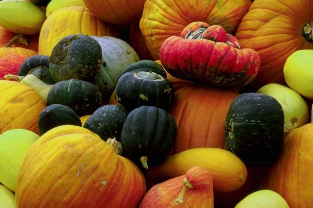

Have a Question?
Here we have compiled the questions we are asked quite often.
Here we have compiled the questions we are asked quite often.
Q: Do you charge an entrance fee to visit?
A: Short answer: yes. Guests pay for entry (which includes some farm activities) when scheduling a visit. This is covered in more detail on the
'Farm Visits' page.
Q: Do you allow dogs on the farm?
A: We welcome dogs that behave well around farm animals, other dogs, and individuals of all ages, and remain 100% on a leash for the duration of their visit. We also ask that dogs bring owners that clean up after them.
Q: Is there anything that we are required to bring for our visit?
A: We would recommend weather appropriate attire and footwear; and don't forget your camera!
Q: Do you accept cards for payment?
A: Yes. We accept all Visa and Mastercard credit/debit cards.